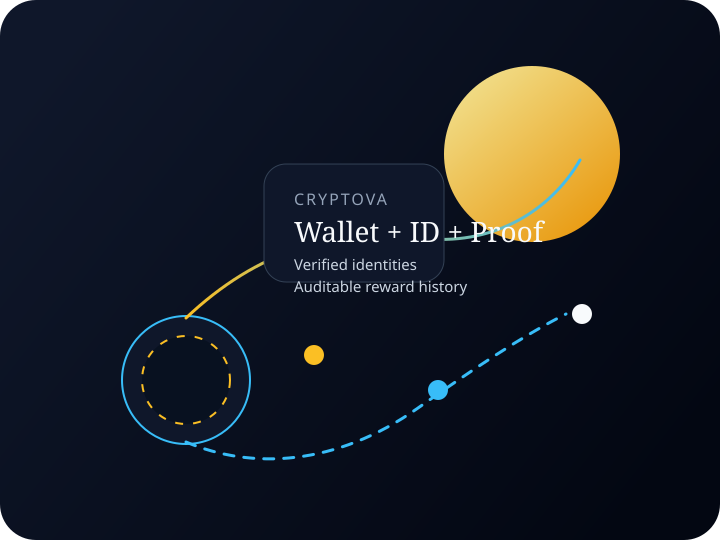
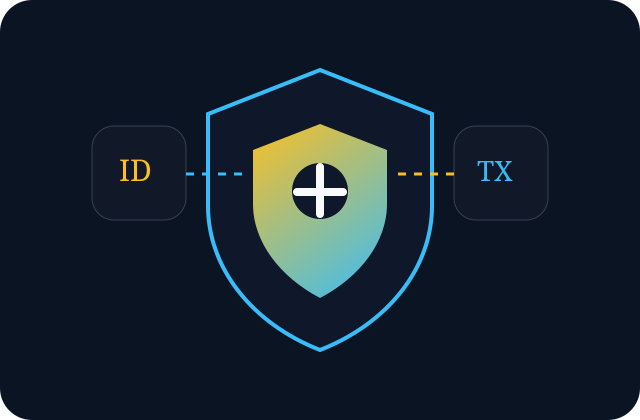
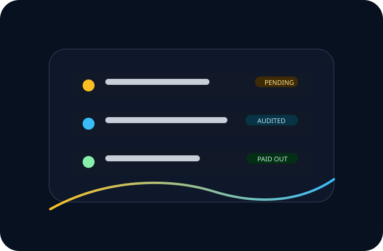
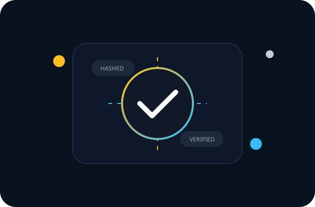
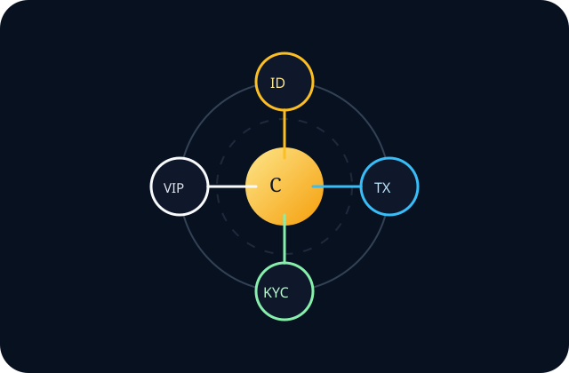

Identity Review
Government ID plus selfie verification.
Verified Participation, Transparent Rewards
Join Cassinix to participate with confidence, with wallet-linked payouts, strict ID verification, and fairness-proofed draws inside one secure dashboard.

Cassinix trust network
Wallet + ID + Face + Proof Connected payout checks, identity review, and recorded fairness proofs.Core Trust Layers
Government ID plus selfie verification.
Wallet validation with transaction ID confirmation.
SHA-256 proof hashes recorded for every draw.

Verification stack
Identity and payout checks stay linked Government ID, live face verification, wallet checks, and fairness-proofed draws work together across the Cassinix platform.Reward Transparency
Track pending and confirmed payouts directly from your reward ledger.
Inspect SHA-256 draw history and recorded proof hashes.
Every confirmed payout can be tied to an explorer-linked blockchain transaction ID.

Reward visibility
Pending, confirmed, and auditable Wallet-linked rewards, admin confirmation, and explorer URLs give members a cleaner payout history.How It Works
Choose your tier, register, and connect your wallet to receive payouts.
Upload a government-issued ID and a live selfie. Our team confirms authenticity and matches your identity.
Claim daily entries, complete tasks, and monitor pending versus confirmed payouts directly in your reward ledger.
Membership Tiers
Basic Tier
Built for first-time members who want verified participation, clean reward tracking, and the full Cassinix onboarding foundation.
VIP Tier
Designed for members who want stronger leaderboard momentum, quicker milestone movement, and more consistent visibility.
Pro Tier
Made for highly active members who want competitive draw odds, elevated profile visibility, and a more aggressive reward pace.
Elite Tier
Reserved for maximum-participation members who want the strongest position, the fullest dashboard advantage, and the most powerful entry weight.
Why Members Trust Cassinix
Rewards are tied to validated wallets.
Identity checks require both document and face verification.
Admins confirm payouts with transaction IDs linked to blockchain explorers.
Draws are backed by recorded proof hashes, ensuring fairness and transparency.

Recorded proof vault
Every draw leaves an auditable trail Proof hashes, review state, and payout records reinforce a cleaner chain of trust for members and admins.Testimonials
“I can see pending rewards, confirmed payouts, and whether my wallet is ready before anything is processed.”
— Ledger-focused member“The KYC flow is stricter now. It asks for both my ID and a face selfie, which makes the platform feel more serious.”
— Verified participant
Member confidence
Protection that feels visible Participants can see the trust stack instead of guessing how verification and payouts are handled behind the scenes.Platform Commitments
Cassinix is built for transparent giveaway participation, prioritizing identity trust, payout visibility, and verifiable fairness. Unlike platforms that obscure reward handling, Cassinix ensures every draw, payout, and participant verification is recorded and auditable. Our system integrates wallet-linked rewards, government ID and face verification, and proof-of-fairness draw records to create a trusted environment where every participant can see how rewards are earned and distributed.
All accounts must provide authentic identity information, connect a verified payout wallet, and submit original KYC documentation. Any duplicate, falsified, or manipulated submissions will be subject to rejection or removal at the discretion of the platform. Cassinix enforces these standards to maintain fairness, protect participants, and ensure that every payout is backed by genuine verification.
Privacy & Review
Cassinix takes identity verification seriously. Government-issued ID documents and live selfie uploads are collected solely for verification purposes and stored securely for access only by authorized administrators performing manual review. Sensitive identity details are never displayed in member-facing dashboards, where users see only their verification status such as pending, approved, or rejected. Identity data is used exclusively for approving or rejecting verification requests, confirming payout eligibility, and preventing duplicate accounts, fraud, or abuse. All identity records are handled under strict compliance and protection standards so personal data is never repurposed beyond verification and abuse prevention.
Cassinix provides a secure, admin-reviewed support system so inquiries are handled with accuracy and accountability. Members should use the built-in support flow for account questions, payout eligibility, and KYC verification so every request is reviewed by authorized administrators and tracked inside the platform for transparency. All support tickets are manually reviewed to reduce misinformation and maintain fairness around sensitive issues such as identity verification and payout disputes. By keeping support interactions within the platform, Cassinix protects member data and ensures sensitive information such as wallet details or identity documents is never exposed through unsecured channels. Official social destinations are being finalized and will be made available for general inquiries, updates, and community engagement once verified accounts are live.